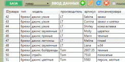
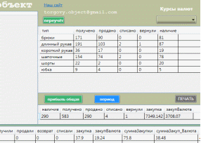

Бесплатное приложение «Торговый объект» рекомендуется для работы со штучным товаром , исчисление которого осуществляется в целых цифрах без запятой. С помощью этой программы можно отследить полный цикл движения товара от поставщика до покупателя. Если товар имеет размерный ряд либо разные цветовые или иные различия, вы сможете анализировать , какие именно размеры либо цвета продаются быстро, а какие медленно, и соответственно вы получите точную информацию по каждой единице проданного товара о наценке в процентах, так как часто бывает , что малоходовые размеры либо цвета продаются со скидкой. Данная информация поможет вам оптимизировать работу с поставщиками товара, так как вы всегда будете знать ликвидность каждой модели товара и сможете ограничить заказ товара с меньшей ликвидностью.
Весь учет в программе привязан к курсу выбранной вами твердой валюты, то есть вам придется вводить курс вашей национальной валюты к доллару , евро или иной валюте. Все данные о чистой прибыли вашего магазина будут выводится на экран в валюте, данные для расчета рентабельности будут также учтены в валюте, что поможет вам получить реальные цифры результатов вашей деятельности несмотря на изменения курсов валют.
В программе также можно вести учет ваших расходов и использовать эту информацию для их дальнейшего сокращения. Благодаря информации о ликвидности товаров , учёте сделанных вами расходов, информации о проценте торговой надбавки по каждой группе товаров, вы сможете откорректировать деятельность вашего магазина и поднять уровень вашего дохода.
Полная инструкция находится в архиве для скачивания вместе с программой "Торговый объект".
Для работы данной программы на вашем компьютере необходима операционная система Windows XP, 7, либо поздняя, а также приложение Microsoft Office 2007 или более позднее с компонентом Access. Данное программное обеспечение установлено у абсолютного большинства пользователей , но лучше это проверить нажав кнопку «ПУСК» в левом нижнем углу экрана, выбрать «все программы» , и выбрав папку «Microsoft Office» проверить в ней наличие компонента(обычно верхняя строка списка в папке) Microsoft Office Access . При отсутствии Access его нужно установить из источника установки вашего пакета Microsoft Office.
Запустить программу можно сразу из папки , установка в систему компьютера не требуется, так как программа «Торговый объект» использует Microsoft Office Access для работы с вашей базой данных. Также в архиве с программой находится файл учебной базой данных с небольшим количеством введенной информации , для того чтобы вы могли потренироваться использовать функции программы перед началом работы. Пользоваться программой можно непосредственно с носимых накопителей информации типа флешки.
Программа прошла проверку в работе в течении года, в результате чего доказала свою работоспособность. Так как программа «Торговый объект» использует Microsoft Office Access , то её функционал немного ограничен по сравнению с другими похожими либо бухгалтерскими программами, но простота пользования и подключения к компьютеру позволит работать с ней гораздо большему количеству пользователей.
Полная инструкция находится в архиве для скачивания вместе с программой "Торговый объект".
Урок 1. Обзор фунций программы.
Урок 2. Заполнение базы с нуля
Данная инструкция также есть в архиве для скачивания вместе с программой "Торговый объект".
Руководство пользователя
Программа должна находиться на ПК с установленными операционной системой Windows XP или позднее и пакетом Microsoft Office 2007 или позднее с подключенным компонентом Access. Иначе она работать не будет.
Программа с инструкцией пользователя, файлом пароля, файлом пустой базы данных для последующего заполнения, файлом учебной базы данных, на которой можно потренироваться, и непосредственно сама программа находятся в архиве, после открытия которого можно сразу же запустить её без установки (рис. 1).
Рисунок 1 - Вид папки распакованного архива
Для вызова программы дважды кликните файл WpfAppTO.exe из папки «Приложение Торговый объект» (рис.2), после чего произойдёт загрузка программы. Ярлык программы WpfAppTO.exe можете вывести на рабочий стол, также можете переименовать его по своему усмотрению, задав ему имя в соответствии с названием вашей торговой точки. Файлом пустой базы данных (рис. 3) лучше воспользоваться чуть позднее. После того, как вы потренируетесь в пользовании программой, просто скопируйте файл ‘torgovy_object.mdb’ из папки «Файл пустой базы для заполнения» в папку «Приложение Торговый объект». Данный файл после вашего подтверждения заменит файл с учебной базой, и вы сможете вводить туда свои данные и пользоваться программой.
Рисунок 2 - Содержание папки «Приложение Торговый объект»
В папке «Приложение Торговый объект» вверху находится файл базы данных ‘torgovy_object.mdb’ для тренировки пользования данным приложением (рис. 2).
Рисунок 3 - Файл пустой базы данных в соответствующей папке
Программа загружается с окна, требующего ввод пароля (рис. 4), после чего открывается главное окно с чистыми незаполненными информацией окошками для её отображения (рис. 5).
Все вносимые вами изменения данных в приложении также сохраняются в базе данных.

Рисунок 4 - Окно для ввода пароля
Рисунок 5 – Внешний вид приложения при загрузке
Для просмотра или других действий с таблицами нужно выбрать название таблицы из предлагаемого списка и нажать кнопку «БАЗА».
Рисунок 6 - Выбор таблицы из выпадающего списка
Нажатие на кнопку «БАЗА» должно производиться после того, когда в выпадающем списке кликнута строка с названием таблицы («Курс валюты», «Товар», «Продажи», «Поставки», «Поставщик», «Платежи», «Списание», «Возвраты»), в которой вводят или изменяют данные (рис. 6).
Рисунок 7 – Отображение таблицы из выпадающего списка при нажатии кнопок для ввода и редактирования данных
Для работы с таблицами в левой верхней части интерфейса находятся кнопки: - для вызова формы добавления записи, - для вызова формы редактирования записи, - для обновления таблицы, - для удаления записи.
При первоначальном запуске приложения ввод данных желательно начать с таблицы «Товар». Если в какую-либо таблицу ранее вводились данные, то после нажатия кнопки «БАЗА», они будут отображены в окне в левой верхней части интерфейса (рис.7). Также заполнение базы данных можно начать с таблиц «Платежи», «Поставщик» или «Курс_валют».
Заполнив таблицы «Поставщик», «Курс_валют» и «Товар», затем таблицу «Поставки», можно переходить к заполнению таблицы «Продажи».
Рисунок 8 – Форма для ввода данных таблицы «Товар»
После нажатия на кнопку «ДОБАВИТЬ» и выбора из выпадающего списка, к примеру, таблицы «Товар», откроется форма в виде окна (рис. 8), в которую нужно ввести данные в пустые поля. В случае неправильного выбора типа вводимых данных в форму добавления, на экране появится сообщение-подсказка (рис. 9) с предупреждением о неправильно выбранном типе данных. Например, в поля с названиями «Количество», «Получено», «ID_поставщика», «ID_товара» , «ID_продажи» должны вводиться целые числа без точек и запятых. В поля «Цена продажи», «Цена закупки», «Сумма», «Курс», «Сумма платежа», «Розница» можно вводить числа с запятой. После того, как поля формы заполнены (рис. 11), нужно нажать кнопку «ДОБАВИТЬ», и, при условии правильно введенной информации, она будет сохранена в базе данных, а на экране появится окно с сообщением о добавлении записи (рис. 10) с указанием названия таблицы, в которую она была внесена. После ввода хотя бы одной записи в таблицу, в окне в левой верхней части интерфейса для отображения данных мы можем увидеть все введенные записи (рис. 13). Отображение записей происходит автоматически после закрытия формы для ввода данных, либо в ручном режиме после запуска приложения и выбора требуемой таблицы из выпадающего списка с последующим нажатием кнопки «БАЗА». Для просмотра большого количества записей используется элемент для прокрутки записей как в вертикальном так и в горизонтальном направлении.
Рисунок 9 – Предупреждающее сообщение-подсказка
Рисунок 10 – Сообщение о благополучном выполнении команды в таблице «Продажи»
Самые верхние поля (ячейки) окон во всех формах для добавления данных неактивны и заполняются автоматически - «ID_поставщика», «ID_товара», «ID_продажи», «ID_платежа», «ID_списания», «ID_возврата», «ID_поставщика» или «Дата» в таблице «Курс валют». Например, ячейка «ID_товара» на форме для ввода данных «Товар» (рис. 9) является защищенной от вставки данных и используется только для чтения. Когда эти же формы вызываются для редактирования данных (рис. 11), то они отображаются с загруженными ячейками, содержимое которых можно изменить, кроме самых верхних ячеек с ID (идентификационными номерами).
При благополучном изменении данных формируется сообщение о добавление или обновлении записи (рис. 12).
Рисунок 11 – Форма для редактирования данных с загруженными ячейками
Рисунок 12 – Сообщение об успешном изменении данных
Для случаев, когда один и тот же товар оплачивается частями (в рассрочку или оставлен залог, а потом сделана доплата) либо разными источниками (по банковской карте или наличными), предусмотрен товар с порядковым ID-товара «1». Для отображения данных о платеже (терминал, наличные, кредит или другое) есть соответствующее поле «Касса» при вводе данных в таблице «Продажи». В таких случаях для одной продажи нужно сделать две записи в таблицу «Продажи»:
1. В первой записи указывается ID-товара фактически проданного товара, количество проданного товара и сумма наличных (либо сумма залога, задатка) с указанием данных в ячейке «Касса».
2. Во второй записи указывается ID-товара «1», количество проданного товара нужно ввести «0», также в ячейке «Касса» вводится сумма по пластиковой карте (или вторая часть платежа или иное, выбранное вами). В ячейке «Цвет_размер» рекомендуется ввести число соответствующее ID-номеру фактически проданного товара (например, «42» - как на рисунке снизу) или другие данные, которые помогут вам идентифицировать эту доплату.
Такие данные хорошо отображаются в отчете о продажах (нажать кнопку «ОТЧЕТ», выбрав «ПРОДАНО»), как на данном рисунке:
В учебной базе данных, изначально находящейся в папке с программой, данный товар для указания второй части платежа имеет ID-номер «278» (подчеркнут ярким маркером на рисунке сверху).

Рисунок 13 – Просмотр данных в таблице «Товар» по нажатию кнопки «БАЗА» после ввода данных в таблицу
После того, как таблица «Товар» заполнена, нужно ввести данные о поставщике, у которого закупается товар, в таблицу «Поставщики». Заполнение происходит аналогично заполнению таблицы «Товар».
Перед вводом данных в таблицу «Поставки» нужно ввести курс валюты на день закупки товара, при этом дата в таблице «Курс_валюты» будет той же, что и в таблице «Поставки». Данные действия обеспечивают возможность полного отображения информации в отчете «НАЛИЧИЕ» после ввода всех данных о поставках товара на текущую дату.
При вводе данных в любую из таблиц нужно производить действия, аналогичные заполнению таблицы «Товар». Если проигнорировать ввод данных в таблицу «Курс_валюты», то в отчёте о продажах за период, когда нет данных о курсе, данные о продажах выводиться не будут.
Важно. Когда вы начинаете заполнять пустую базу информацией о поставках, то для каждой поставки товара нужно заполнить ячейку «Номер накладной». Если у вас сотни товаров, расписанных по сотням накладным, это может оказаться очень трудоёмким процессом. В данном случае вместо номера накладной можно указать номер инвентаризации (переучёта), например: 1-туфли - по типу товара или 1-01-01-2019 - по дате инвентаризации, либо так, как вы посчитаете нужным.
В случаях, если при работе с программой вы выбирали такие периоды времени, когда не вводился курс валют или отсутствовали платежи либо данные до 1 января 2019 года, при попытке просмотра данных из таблиц «Курс_валюты» или «Платежи» окно просмотра может не выводить информацию к просмотру. Для вывода требуемой информации вам нужно либо выбрать интересующий период времени, либо нажать кнопку ввода данных . При нажатии кнопки выбора данных , будут выведены для просмотра все ранее введенные данные в эту таблицу.
В случае, если допущена какая-либо ошибка в написании данных, её можно исправить с помощью кнопки редактирования записи . Для этого нужно, чтобы интересующая нас таблица была доступна к просмотру (как на рисунке 11). С помощью курсора, управляемого мышкой, в таблице, в которой требуется ввести изменения, выделяем строку. Выделенная строка подсветится синим цветом. После этого нужно нажать на кнопку редактирования записи . На экран будет выведено окно формы для ввода, которым мы пользовались при вводе данных. Только в данном случае поля для ввода данных будут заполнены, как на рисунке 11, а не пустые, как на рисунке 8. Нам остается изменить информацию в интересующем поле и нажать кнопку «Добавить», после чего на экране появится сообщение об успешном изменении записи (рис. 12). Внимание! Поле с данными о номере записи (например, ID_товара) редактированию не поддается, а служит лишь для просмотра.
Если не кликать мышкой в окне отображения данных на интересующую строку, то выбор данных для изменения не произойдет, а после нажатия на кнопку редактирования записи появится сообщение-подсказка, как на рисунке 14.
Рисунок 14 – Предупреждающее сообщение-подсказка
Также для редактирования либо просмотра какой-то определенной записи можно использовать поиск по номеру этой записи, если таковой известен. Для этого нужно слева от надписи «Поиск» поставить галочку и ввести номер записи в ячейку «Поиск», после чего из выпадающего списка выбрать интересующую таблицу и нажать кнопку «БАЗА» (рис. 15). Если после этого нам больше не нужно производить поиск по конкретному номеру, то галочку с «Поиска» нужно снять.
Рис. 15 – Поиск по номеру записи в таблице «Товар»
Для группового изменения записей в каком-либо поле одной таблицы можно использовать кнопку обновления таблицы . Для этого достаточно воспользоваться просмотром данных в левом верхнем окне отображения, как на рисунке 13, и определить номера (ID) в левом столбце таблицы, которые требуют изменения. После чего нужно нажать кнопку - обновление таблицы, и в появившейся форме ввести новую информацию в предлагаемые к изменению поля и диапазон строк и нажать кнопку «ОК». Поле для изменения выбирается так (рис. 16): в пустой светлый кружок слева перед названием ячейки ставится точка (чтобы случайно не изменить поля, не требующие изменения, так как одним действием можно изменить данные определенного поля сразу во всей таблице). После успешного завершения операции на экран будет выведено сообщение об удачном обновлении таблицы (как на рисунке 17).
Рисунок 16 – Выбор поля и диапазона для обновления данных таблицы
Рисунок 17 – Сообщение об успешном изменении данных таблицы
Когда минимально необходимое количество записей занесено в таблицы, можно сформировать отчет через кнопку «ОТЧЁТ». Пока нет данных о продажах, нам не будет доступен отчет «Продажи» и все отчеты, связанные с получением прибыли, такие как «Прибыль», «Рентабельность».
При формировании отчётов в большом верхнем левом окне отображения информации необходимо с помощью элемента «радиокнопка» выбрать тип отчёта: «НАЛИЧИЕ», «ПРИХОД» или «ПРОДАНО» (в пустой светлый кружок поставить темную точку). Отчёты будут выведены в нижний элемент отображения данных (рис. 18). Для выбора каких-либо параметров при получении отчёта можно воспользоваться полями для ввода даты, типа, наименования, цен и прочих данных о поставках, продажах и товарах. Элементы для выбора параметров фильтрации данных при формировании запроса находятся внизу под окном для отображения данных. Под большими окнами (как под нижним, так и под верхними) находятся также окна маленького размера, которые в одну строку отображают итоговую информацию по данному отчёту.
Рисунок 18 – Одновременный просмотр отчета «Продано» с выбранным параметром фильтрации поля «Производитель»
При формировании отчета о наличии товаров рекомендуется ставить галочки перед надписью «ДА» или «НЕТ» (рис. 19) для того, чтобы в отчёте отображались либо товары, которые есть в наличие, либо те, которые закончились:
Рис. 19 - Выбор атрибута для наличия или отсутствия товара
Если этим фильтром не пользоваться, то будут выведены все записи подряд. Если поставлены две галочки, то отчет будет пустым.
В случаях, когда в неактивном фильтре «Период с… по… » (рис. 20) в полупрозрачном изображении имеется какая-либо дата, просмотр данных из
таблиц в верхнем окне по нажатию кнопки «БАЗА» будет производиться за тот период времени, который обозначен в фильтре «Период с…по…».
Рис. 20 – Полупрозрачное изображение даты фильтра «Период с… по… »
Если в неактивном фильтре «Период с…по…» в полупрозрачном виде имеется какая-либо дата, то на формирование отчетов при нажатии кнопки «ОТЧЁТ» этот период времени не влияет, и отчет выводится полностью за все время, когда вводились данные. Для выбора периода при формировании таких отчётов нужно поставить галочку рядом с надписью «Период с…по…» и отметить даты из календарей.
Для выбора какого-либо фильтра при формировании запроса на отчет, нужно слева от названия фильтра установить галочку и выбрать значения из выпадающего списка, или ввести их в ячейку (рис. 21). Данные в выпадающих списках будут предлагаться автоматически из аналогичных ячеек таблиц, которые уже существуют в базе данных. Данные, выпадающие из списка «Касса» заданы в программе, и если пользователь при заполнении формы о продажах и пользования кнопки «Добавить» ввёл собственные, а не предложенные, то и для фильтрации в отчетах их тоже нужно ввести вручную.
Рис. 21 – Изображение фильтров запроса на отчет, помеченных галочками
При формировании отчетов, связанных с получением данных о прибыли с момента заполнения данных, достаточно нажать кнопку «Прибыль общая», и в строку под кнопкой будут выведены полные данные о валютной прибыли и рентабельности (рис. 22).
Рис. 22 – Строка отчета «Прибыль общая»
Для получения данных о прибыли и рентабельности за выбранный период сначала нужно:
- вывести отчет о продажах с помощью кнопки «ОТЧЁТ» и радиокнопки (в пустой светлый кружок поставить точку) «ПРОДАНО»;
- открыть таблицу «Платежи» с помощью кнопки «БАЗА» и выбора таблицы «Платежи» из выпадающего списка.
После этого:
- выделить курсором итоговую строку отчета «ПРОДАНО» в центральном малом окне отображения, находящимся под большим нижним окном отображения (рис. 23):
Рисунок 23 - Выделенная строка с ячейками о продажах за определенный период
Рисунок 24 – Выделенная итоговая строка таблицы «Платежи»
- выделить курсором итоговую строку таблицы «Платежи» в нижнем малом окне отображения, находящимся снизу справа от большого верхнего окна отображения (рисунок 24);
- нажать на кнопку «Период».
При удачном формировании отчета и наличии данных для отчета выйдет сообщение о рентабельности или прибыли за выбранный промежуток времени (рис. 25).

Рисунок 25 – Сообщение об успешном отчёте «Прибыль»
При неудачном формировании отчета из-за отсутствия данных в ячейке либо невыделенных ячейках выйдет сообщение-предупреждение (рис. 26).
Рисунок 26 – Предупреждающее сообщение-подсказка

Рисунок 27 – Формирование отчёта «Переучет» по нажатию одноименной кнопки
Для вывода отчетов «Переучет» используется окно в правой верхней части приложения (рис. 27). При выводе отчета «Переучёт» в малом окне, находящемся снизу, выходит итоговая информация по этому отчету с указанием количества товара в наличии и его суммарной закупочной стоимости. Переучет отображается только на тот момент, когда произведен данный запрос, выбор по определенной дате невозможен. Если есть необходимость сохранять данные из этого окна, то это можно сделать простым копированием, первоначально выделив текст в данном окне (рисунки 28-29), а потом вставив для хранения в текстовый документ («Блокнот» или «WORD»). В итоговом окне снизу отображается закупочная цена товара и его движение.

Рисунок 28 - Выделенные данные в окне отчета «Переучет»
Рисунок 29 - Копирование данных из окна отчета «Переучет»
Формы, вызываемые при выборе определенной таблицы и нажатии кнопки удаление записи , используются для удаления информации (рис. 30). При удалении записи нужно воспользоваться просмотром данных в нижнем окне отображения (как на рисунке 13) и определить номера строк (ID) в левом столбце таблицы, которые требуют удаления. После чего нужно нажать кнопку «Удаление», затем в появившейся форме ввести диапазон удаляемых строк и отметить кнопку «ОК». При неправильном вводе типа данных выдается сообщение об ошибке, а при удачном - об удалении записи, как и при других операциях.
Рисунок 30 – Форма для ввода номеров строк, подлежащих удалению
Во время просмотра отчетов можно вызвать формы для ввода данных о курсе валют, продажах или поставках. Для этого нужно выделить строку, кликнув по ней курсором, и, после того, как она станет синей, нажать на правую клавишу мышки. Затем выбираете нужный вам пункт меню (рис. 31) и вводите данные в таблицу, которая вас интересует.
Рисунок 31 - Выбор пункта контекстного меню
Для ввода курса валют можно воспользоваться выпадающим списком в правом верхнем углу программы (рис. 32). После клика по выбранной строке откроется окно вашего интернет-браузера с сайтом национального банка вашей страны.
Рисунок 32 - Выпадающий список стран
Вы можете создать папку у себя на компьютере для резервного сохранения данных, например, после проведения инвентаризаций товара, и заносить туда копии базы данных (файл ‘torgovy_object.mdb’) из папки «Программа Торговый объект» вашей рабочей программы. Каждый резервный файл помещайте в пустую папку, так как, если в папке уже есть такой файл, то он его удалит. Для просмотра любого из этих файлов нужно достать из ранее скачанного архива папку «Программа Торговый объект» и скопировать её в новую папку, где вы можете смотреть ваши сохраненные копии через копирование в эту папку. Находящийся там файл базы будет автоматически удалятся после вашего подтверждения. Рекомендуется назвать папку именем типа «Просмотр резервных копий» или похоже, в том числе и на ярлыке, если будете выводить его на рабочий стол, чтобы избежать путаницы с основной программой. Примерный каталог для работы с копиями представлен на рисунке 34.
Рисунок 34 - Каталог с резервными копиями: для каждой копии своя папка
Программа предусматривает функцию вывода информации на печать с помощью кнопок «Печать», которые выводят данные из верхнего и нижнего больших окон.
Для выхода из программы нужно воспользоваться стандартной красной кнопкой выхода (с крестиком) в правом верхнем углу окна.

Можно считать в тетради.

Но лучше на компьютере !

Попробуйте считать так !
torgovy.object@gmail.com